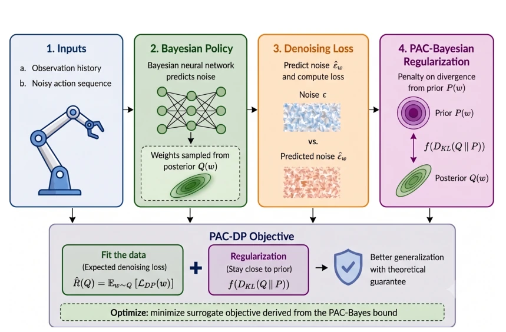
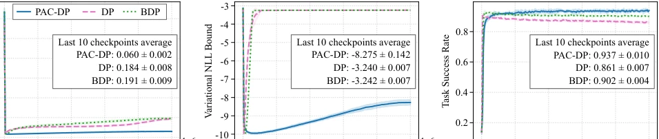

This paper equips Diffusion Policy with a PAC-Bayesian "theoretical outer layer", attempting to solve the generalization problem under low-data conditions. The highlight lies in modeling the policy as a BNN and introducing KL regularization; theoretically it is indeed more rigorous, and experiments prove it is effective under low-data conditions. However, the drawbacks are also quite apparent: BNN training is typically slow and unstable. Although the authors claim the time increase is not significant, sampling weights during actual deployment still increases inference overhead. Additionally, the PAC-Bayes bound itself is relatively conservative; actual performance may rely more on heuristic tuning of the KL term rather than theoretical guarantees. For complex tasks like ToolHang, the improvement is huge, but for simple tasks like Lift, there is almost no change, indicating that regularization is redundant when data is sufficient. Overall, this is a successful attempt of theory-driven practice, but do not expect it to replace large-scale data pre-training.
Diffusion Policy (DP) is very popular in robot imitation learning, but has poor generalization ability under limited data. Existing research [3]-[6] points out that minimizing only the denoising objective leads the model to memorize training data rather than learn the distribution, especially when data is scarce. Although existing work improves performance through architecture improvements [7]-[8] or increasing data [11], these methods lack theoretical guidance and cannot directly optimize the training objective. Especially [3] points out that the optimal score function may produce samples closely related to training data. Therefore, a training framework that can theoretically guarantee generalization performance is needed. Existing PAC-Bayesian methods have applications in control [20]-[21] and planning [22], but have not yet been used to regularize the training objective in DP. This paper aims to fill this gap, providing theoretical guarantees without significantly increasing training time.
The overall process models the denoising network of Diffusion Policy as a Bayesian Neural Network (BNN). Standard DP training minimizes denoising loss L_DP, while PAC-DP treats it as the empirical risk of a stochastic predictor. Utilizing the PAC-Bayes generalization bound (Eq 5), a new training objective (Eq 10) is derived. This objective contains two parts: standard denoising loss and KL divergence regularization term (between posterior Q and prior P). During training, weights w are sampled from posterior Q, optimizing posterior mean and variance via reparameterization trick. During inference, posterior mean or sampled weights can be used. Innovations lie in: 1) Incorporating DP into PAC-Bayes framework, providing theoretical regularization for DP training for the first time; 2) Only setting the denoising network as BNN, conditional path remains deterministic, ablation experiments prove Full BNN destroys observation representation; 3) Using truncated loss to handle unbounded loss problem, directly optimizing original loss in practice. Additionally, Algorithm 1 and 2 detail the training and inference steps, ensuring reproducibility. The KL term encourages posterior distribution to be close to prior, preventing overfitting.

Fig. 1. Overview of PAC-DP. The diffusion policy is modeled as a Bayesian neural network by learning a posterior distribution Q(w) over network parameters. Training minimizes a PAC-Bayesian objective that combines the standard denoising loss with a KL-divergence regularizer between the posterior and prior distributions. During inference, actions are generated using either sampled network parameters or the posterior mean.
On Robomimic and PushT benchmarks, comparing Standard DP [2] and BDP (BNN without regularization). Metrics include NPE, NLL, and success rate. Results show PAC-DP has lowest NPE on all tasks, NLL is tighter. Advantage is obvious under low data (20 demos), e.g., PushT success rate improved from 48% to 55%. Complex task ToolHang improvement is largest (40% -> 74%). Simple task Lift difference is small. Ablation shows regularization is key, not BNN itself. Hyperparameter sensitivity shows method is robust. Finally verified on Franka real robot, 200 trials 100% success, proving Sim2Real capability.

Fig. 3. Optimization dynamics on the PushT task. Shaded regions indicate the std over three random seeds. Reported values correspond to the mean ± std over the final ten checkpoints.